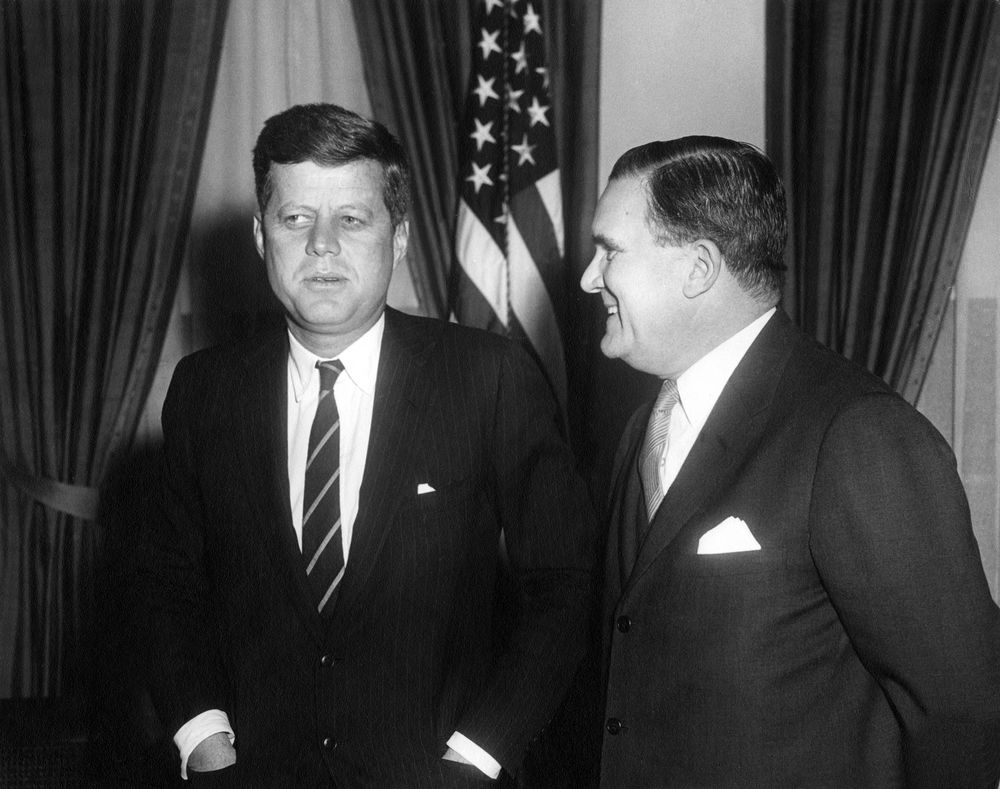
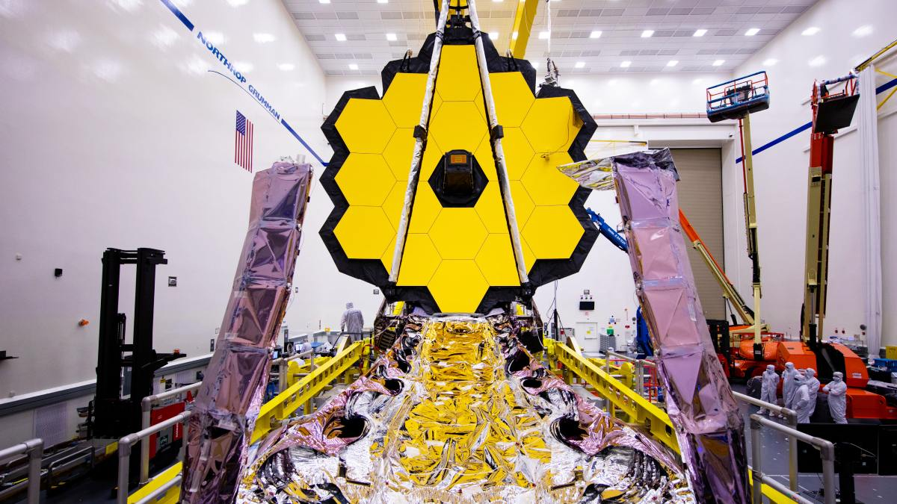

History
Who was James Webb?
The person who NASA chose to name their telescope after was James Webb, former director of NASA from 1961 to 1968. He did more for science more than
most government officials such as kickstart the apollo moon program and change space exploration forever. It is only fitting that we name this telescope after
him in honor of his accomplishments. During his time at NASA, he was committed to landing humans on the moon, shortly after he retired in 1968, NASA successufly accomplished
its mission. Even in retirement, he proudly helped the administration behind the scenes, providing guidance to those who needed it.

26 Years Of Development
Development began for the JWST project in 1996 and was originally planned to launch some time in 2007, as we know, this never happened. In fact, JWST was delayed several times
due to budget overruns, redesigns, congress threatening to cancel the project, and of course the pandemic in 2020. In 2016, its construction was complete, and after that,
extensive testing had to be done on each and every little piece of this machine, because we only had one shot at getting it right. After all of that, this project cost a
total of about $9.7 Billion!

Partnership
NASA, ESA (European Space Agency), and the CSA (Canadian Space Agency) have all collaborated on the telescope since 1996. The ESA provided the NIRSpec instrument, and the rocket. The CSA provided the NIR slitless spectrograph, and the fine guidance sensor. Many thousands of some of the most brilliant minds from these agencys as well as a total of 258 companies and 15 countries helped test, build, and design this magnificent machine.